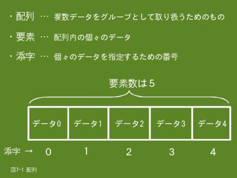

7. たくさんのデータを処理するための配列（1/3）
7.1 配列とは
- 
- 【図７-１】配列とは
前の章で、肥満度（BMI）の計算をして結果を表示するという例題プログラムを紹介しましたが、この場合は入力したデータや計算結果は表示後捨てていました。この例題プログラムを改造して、最後にまとめて肥満度の値が異常値のもののみ入力データと肥満度の値を表示するようにしたい場合、入力データと肥満度の値は保存しておく必要があります。
データを保存するには変数を使えばよいのですが、保存するデータの個数が多い場合、変数名を考えて宣言を記述するだけでも大変です。また、データをどの変数に格納したのかも覚えておかなければなりません。
Ｃ言語には沢山の同じ種類のデータを取り扱うのに便利な配列と呼ぶデータ構造があります。配列は複数のデータをグループとして扱い、個々のデータはグループ名と番号で示します。配列ではグループ名に相当するものを配列名、個々のデータを要素、番号に相当するものを添字と呼んでいます。
配列を使うことにより、大量のデータを簡単に、効率よく取り扱うことができます。
7.2 配列の宣言と参照
配列を使う場合も、変数と同じように宣言が必要です。基本的には変数の宣言と同じく、型名と配列名を指定しますが、配列は複数のデータを取り扱うためのものですので、要素の個数も指定します。
7.2.1 形式
配列の条件として「取り扱うデータの型は全て同じ」ということがあります。従って、型名は配列に格納するデータの型名を指定します。つまり、int型のデータを格納する配列の型名はint型、char型のデータを格納する配列の型名はchar型となります。
配列のデータを参照するには何番目のデータかを指定するための添字を指定します。添字は０から始まります。
※ 宣言時に初期値を指定しない場合
型名 配列名[要素数];
※ 宣言時に初期値を指定する場合
型名 配列名[要素数] = {初期値１, 初期値２ …};
※ 参照
配列名[添字];
- 型名
- 配列に格納するデータの型名を指定します。配列特有な型名はありません。
- 配列名
- 配列名を指定します。命名規則は変数と同じです。（先頭１文字は英字またはアンダラインで、２文字目以降は英数字とアンダラインの組み合わせです）
- [要素数]
- 配列に格納するデータの個数を指定します。この個数を要素数と呼んでいます。要素数は[（左大括弧）と]（右大括弧）で括ります。
- {初期値１, 初期値２ …}
- 配列にあらかじめ設定しておきたい値が有れば、それを指定します。初期値は省略可能で、省略した場合の値は不定です。また、初期値を指定した場合は要素数は省略可能（[]は必要）で、要素数は初期値の数になります。初期値は{（左中括弧）と}（右中括弧）で括ります。
- [添字]
- 配列の何番目のデータを参照するかを示す番号を指定します。添字は０から始まりますので、最初のデータの添字は０となり、最後のデータの添字は「要素数 - 1」となります。なお、添字は[（左大括弧）と]（右大括弧）で括ります。
7.2.2 例題
例題１
１メートルに対するインチ、フィート、ヤード、尺、寸の長さを表示します。このプログラムは配列を使う必要性はないのですが、配列の使い方を説明するために使っています。
#include <stdio.h>
int main()
{
double keisu[5];
/* 変換のための係数を代入 */
keisu[0] = 39.370; /* インチ */
keisu[1] = 3.280; /* フィート */
keisu[2] = 1.093; /* ヤード */
keisu[3] = 3.300; /* 尺 */
keisu[4] = 33.000; /* 寸 */
printf("1メートルは%.3fインチです\n", keisu[0]);
printf("1メートルは%.3fフィートです\n", keisu[1]);
printf("1メートルは%.3fヤードです\n", keisu[2]);
printf("1メートルは%.3f尺です\n", keisu[3]);
printf("1メートルは%.3f寸です\n", keisu[4]);
return 0;
}
$ ./ex07_1.prg
1メートルは39.370インチです
1メートルは3.280フィートです
1メートルは1.093ヤードです
1メートルは3.300尺です
1メートルは33.000寸です
$
- 4行目
- double型の配列keisuを宣言します。この配列には５個のデータを格納するので、要素数として５を指定します。
- 7〜11行目
- 配列keisuの各要素に値を代入します。最初の要素の添字は０で、最後の要素の添字は４です。
- 13〜17行目
- 配列keisuの値を出力します。
例題２
上記例題と機能は同じですが、添字にint型の変数を使用しています。
#include <stdio.h>
int main()
{
double keisu[5];
int soeji;
/* 添字のための変数の初期化 */
soeji = 0;
keisu[soeji++] = 39.370; /* インチ */
keisu[soeji++] = 3.280; /* フィート */
keisu[soeji++] = 1.093; /* ヤード */
keisu[soeji++] = 3.300; /* 尺 */
keisu[soeji] = 33.000; /* 寸 */
soeji = 0;
printf("1メートルは%.3fインチです\n", keisu[soeji++]);
printf("1メートルは%.3fフィートです\n", keisu[soeji++]);
printf("1メートルは%.3fヤードです\n", keisu[soeji++]);
printf("1メートルは%.3f尺です\n", keisu[soeji++]);
printf("1メートルは%.3f寸です\n", keisu[soeji]);
return 0;
}
- 5行目
- 添字用の変数を宣言します。添字は整数ですので、通常はint型の変数を使用します。
- 8行目
- 添字は０から始まりますので、０で初期化します。
- 9〜13行目
- 添字としてsoeji変数を使用します。ここでは++演算子を使ってsoeji変数に１を加算していますが、++を変数名の後ろに付けてていますので、式の値は現在のsoejiの内容となり、soejiの内容は１加算されます。
- 15〜20行目
- 8〜13行目と同じく、添字に変数soejiを使用します。